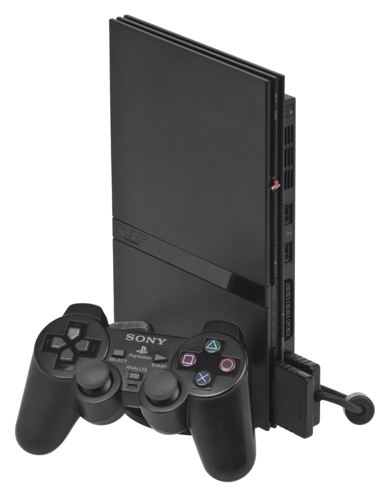

Playstation 2: O rei indiscutível dos videogames
O PlayStation 2, lançado em 2000, superou todas as expectativas e se tornou o console de videogame mais vendido de todos os tempos, com mais de 155 milhões de unidades vendidas.O PlayStation 2 deixou um legado duradouro na indústria dos videogames, popularizando o uso de DVDs em consoles e definindo novos padrões em termos de gráficos e jogabilidade. Seu sucesso abriu caminho para a geração seguinte de consoles e solidificou a posição da Sony como uma das principais empresas do setor.

Por que ele foi tão importante?
- Retrocompatibilidade: O PS2 era capaz de rodar jogos do PlayStation 1, o que o tornou uma opção ainda mais atrativa para os consumidores.
- Biblioteca de jogos gigantesca: Com uma variedade imensa de jogos, desde clássicos como Grand Theft Auto: San Andreas e Metal Gear Solid 2 até títulos exclusivos como God of War e Final Fantasy X, o PS2 ofereceu algo para todos os gostos.
- Online: O PS2 foi pioneiro em jogos online, permitindo que os jogadores competissem e cooperassem com outros ao redor do mundo.
- Multimídia: Além de jogos, o PS2 podia reproduzir DVDs, CDs de áudio e até mesmo ser utilizado como um leitor de Blu-ray em alguns modelos.
Jogos
Algumas curiosidades:
- O PS2 foi lançado em três versões: SCPH-10000, SCPH-30000 (Slim) e SCPH-70000 (Slimline).
- O jogo mais vendido para o PS2 foi Grand Theft Auto: San Andreas.
- O PS2 foi descontinuado em 2013, mas ainda é muito popular entre os colecionadores.